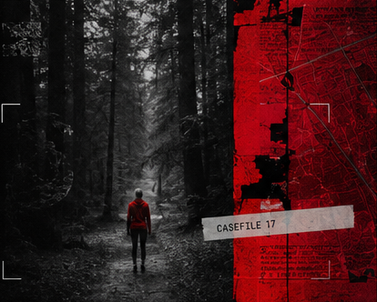

Дело №17
KILL CRITIC
ИНТЕРАКТИВНОЕ РАССЛЕДОВАНИЕ
Известный журналист найден мёртвым при загадочных обстоятельствах. Вам предстоит изучить документы, собрать улики, допросить свидетелей и самостоятельно установить, кто совершил преступление.
Начать расследование